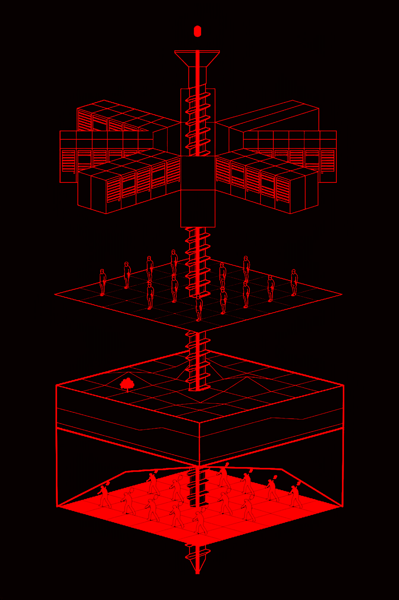

"Artificial intelligence is neither artificial nor intelligent. Rather, artificial intelligence is both embodied and material, made from natural resources, fuel, human labor, infrastructures, logistics, histories, and classifications."
(Crawford, 2021)
Based on:
- Computer Power and Human Reason – Joseph Weizenbaum, 1976
- Surveillance and Capture: Two Models of Privacy – Philip E. Agre, 1994
- Crawford, Kate. 2021 Atlas of AI: Power, Politics, and the Planetary Costs of Artificial Intelligence. New Haven, London: Yale University Press.
- Chun, Wendy. 2021. Discriminating Data: Correlation, Neighborhoods, and the New Politics of Recognition. Cambridge, Massachusetts: The MIT Press.
